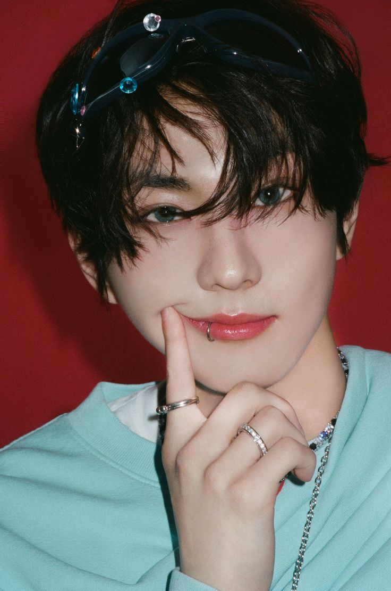
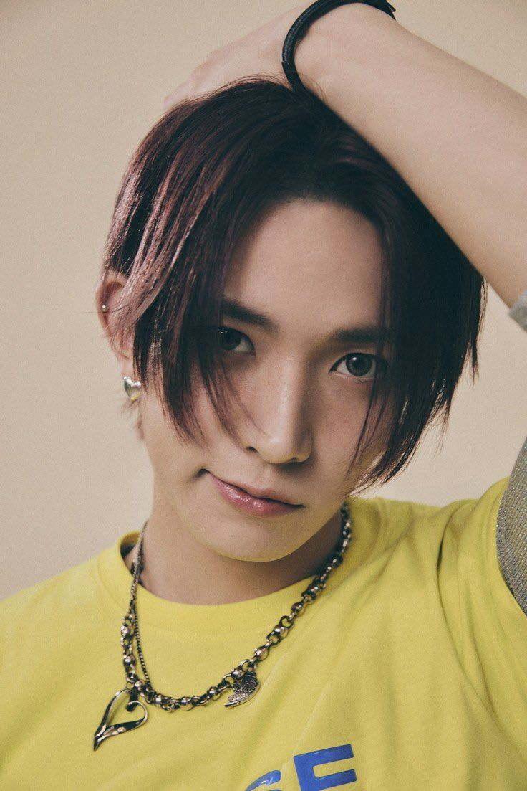
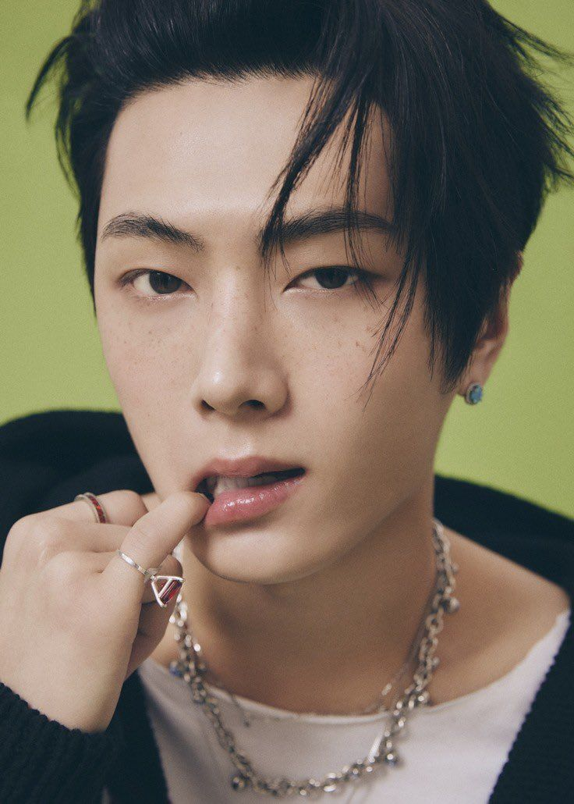
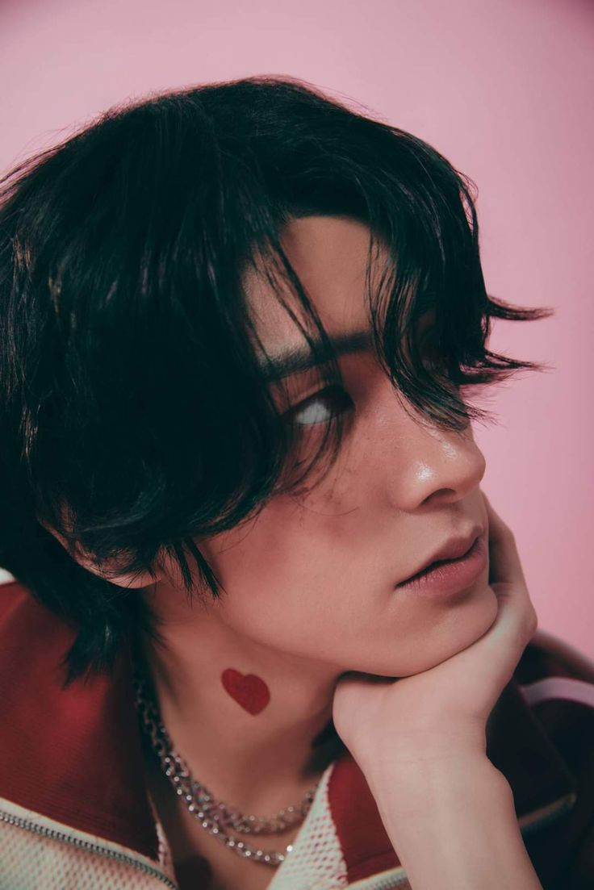
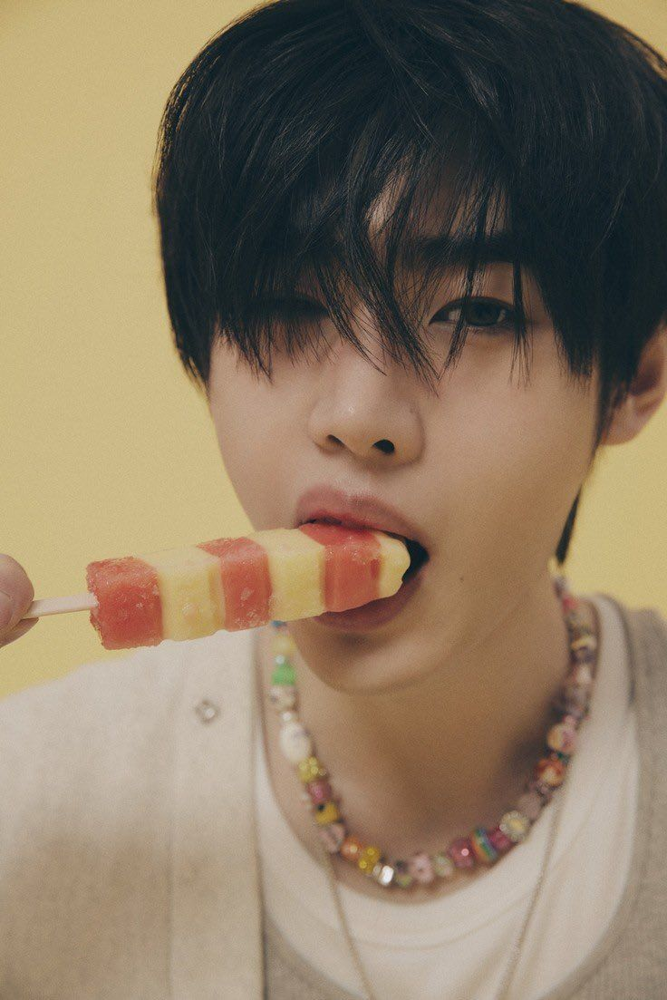
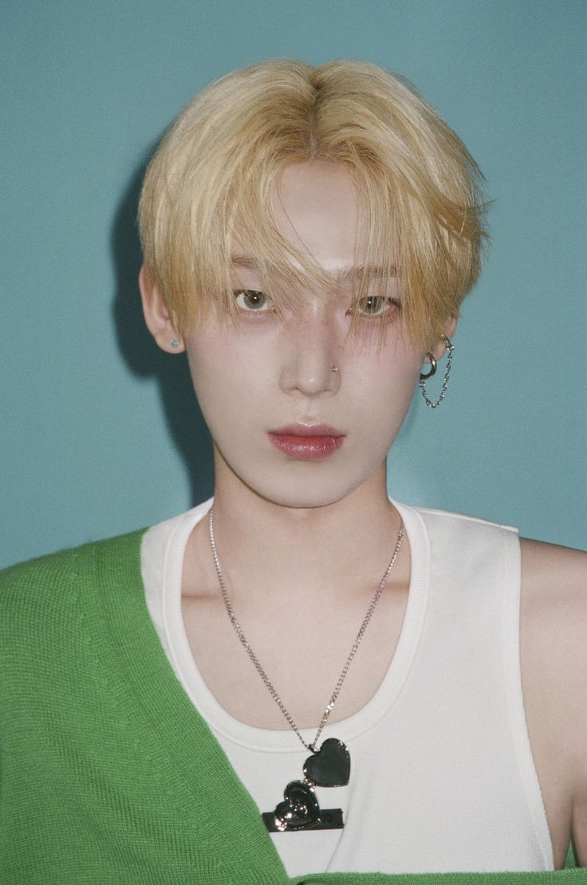
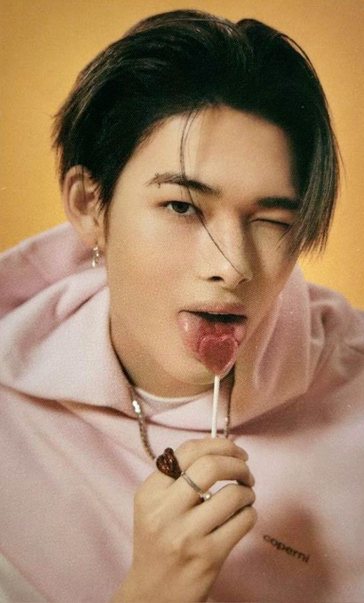

Jungwon
- Full name: Yang Jungwon
- Position: Leader, Vocalist
- Birthday: February 9, 2004
- Height: 175cm (5'9")
- MBTI: ISTJ
- Nationality: Korean
Fun Facts:
- - Jungwon has an older sister that is 2 years older than him.
- - Training Period: 1 year, 4 months.
- - He ranked 1st in the final episode of I-Land with 1,417,620 votes.
- - Jungwon's favorite colors are blue, orange, white, green, and purple. He likes the color blue the most.
- - He has a pet dog named Maeumi, who is named after the dog in the drama Heart Is.
- - His role models are Justin Bieber and BTS' Jungkook.
- - Hobbies: Watching movies and taking a walk while it's raining.
- - Specialty: Singing, dancing, popping, and taekwondo.
Heeseung
- Full name: Lee Heeseung
- Position: Main Vocalist, Center
- Birthday: October 15, 2001
- Height: 181.5cm (5'11")
- MBTI: ESTP
- Nationality: Korean
Fun Facts:
- - He is good at English because he prepared for foreign language high school.
- - Training Period: 3 years, 1 month.
- - Heeseung ranked 5th in the final episode of I-Land with 1,137,323 votes.
- - Heeseung's favorite colors are purple and ivory.
- - He has perfect pitch.
- - He has experience with both songwriting and song composing.
- - Hobbies: Eating ramen and playing games.
- - Specialty: Vocals.
Jay
- Full name: Jay Park
- Position: Vocalist
- Birthday: April 20, 2002
- Height: 180cm (5'11")
- MBTI: INTP
- Nationality: Korean-American
Fun Facts:
- - His hometown is Seattle, WA but he moved to Korea when he was 9 years old.
- - Training Period: 2 years, 11 months.
- - He ranked 2nd in the final episode of I-Land with 1,182,889 votes.
- - Jay's favorite color is purple.
- - Jay speaks a little Japanese and learned it by watching anime.
- - Jay enjoys cooking and eating delicious food and dreamed of becoming a chef when he was young.
- - Hobbies: Blank staring, playing games. and shopping for clothes.
- - Specialty: Hip-hop bounce and dance.
Jake
- Full name: Jake Sim
- Position: Vocalist
- Birthday: November 15, 2002
- Height: 175cm (5'9")
- MBTI: ISTJ
- Nationality: Korean-Australian
Fun Facts:
- - He was born in South Korea but raised in Australia since he was nine years old.
- - Jake is smart and he used to be in the smartest math class.
- - Training Period: 9 months.
- - He ranked 3rd on the final episode of I-Land with 1,179,633 votes.
- - Jake's favorite colors is black and ivory.
- - Jake has a dog named Layla.
- - Hobbies: Playing with his dog, listening to music, and shopping for clothes.
- - Speciality: Impressions of dogs and controlling his voice tone.
Sunghoon
- Full name: Park Sunghoon
- Position: Vocalist
- Birthday: December 8, 2002
- Height: 180cm (5'11")
- MBTI: ISTJ
- Nationality: Korean
Fun Facts:
- - Sunghoon has a younger sister born in 2007.
- - He has a dog named Gaeul.
- - Training Period: 2 years, 1 month.
- - He ranked 6th on the final episode of I-Land with 1,088,413 votes.
- - He used to be a competitive figure skater.
- - He was a two-time national junior silver medalist who represented South-Korea in various international competitions.
- - Hobbies: Figure skating and clothes.
- - Speciality: Face and skating.
Sunoo
- Full name: Kim Sunoo
- Position: Vocalist
- Birthday: June 24, 2003
- Height: 177cm (5'10")
- MBTI: ISTJ-A
- Nationality: Korean
Fun Facts:
- - He has an older sister born in 2000.
- - Training Period: 10 months.
- - He placed 8th in the final episode of I-Land with 935,771 votes but was the producer's choice to debut.
- - He has a black belt in hapkido.
- - Sunoo's favorite colors are mint, purple, pink, and blue.
- - He started taking piano lessons at a young age.
- - Hobbies: Taking selfies, listening to music, playing games, and watching movies.
- - Speciality: Selfies, face, expressions, and talents.
Ni-ki
- Full name: Nishimura Riki
- Position: Main Dancer
- Birthday: December 9, 2005
- Height: 183cm (6'0")
- MBTI: ENTJ
- Nationality: Japanese
Fun Facts:
- - He is from Okayama, Japan.
- - He is considered the best dancer in the group by both fans and the members.
- - Training Period: 8 months.
- - He was ranked 4th in the final episode of I-Land with 1,140,718 votes.
- - He can memorize the whole choreography in just 10 minutes.
- - He started dancing since he was 3 years old.
- - Hobbies: Dancing, sports, and watching movies.
- - Speciality: Dance.